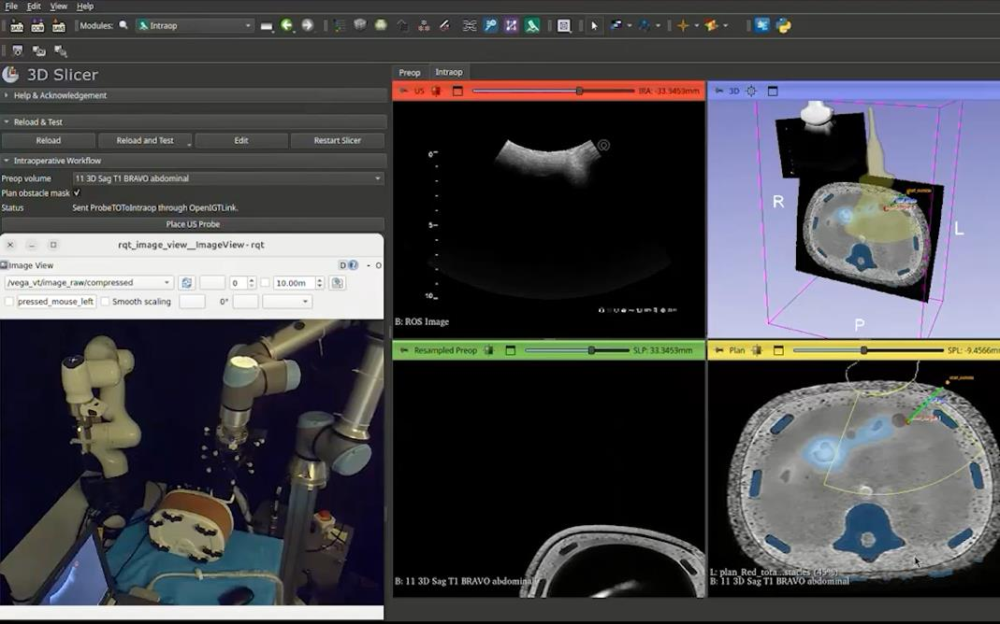
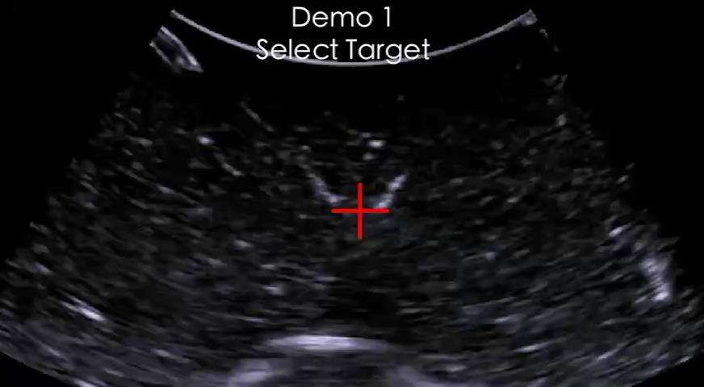

Dependency
Operator supervised
Move from highly operator-dependent manual workflows toward physician supervision.
Validation
The reported evidence comes from an experimental dual-arm robotic ultrasound platform, combining real-time needle tracking with closed-loop action generation.
Experimental platform
The source material shows a dual-arm robotic platform, ultrasound imaging, an experimental phantom, needle manipulation, and the software interface used during demonstrations.



Hardware model numbers and protocol details are not stated in the supplied presentation and are therefore not inferred here.
Localization performance
The presentation reports a 3.01 mm needle-localization error and 25.1 FPS real-time operation. The sample definition and metric protocol are not included in the supplied source, so these are presented as reported experimental results without clinical extrapolation.
Autonomous intervention
In the reported experimental validation, SonoPilot achieved a higher target-hit rate and a shorter average duration than manual operation.
| Metric | SonoPilot | Manual |
|---|---|---|
| Target-hit success rate | 80% | 60% |
| Duration | 17.3 s | 23.2 s |
Reported experimental comparison; not a clinical trial or general claim of clinical superiority.
Potential impact
The presentation frames these as potential benefits and project motivations, not established clinical outcomes.
Dependency
Move from highly operator-dependent manual workflows toward physician supervision.
Workload
Potentially reduce workload associated with repetitive manual operation.
Motion
Explore the precision and consistency potential of controlled robotic motion.
Visibility
Support difficult needle visualization with continuous localization.